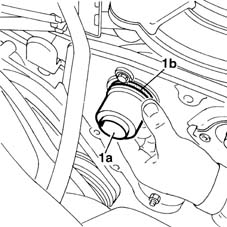

1036G30 front oil seal of camshaft of one l/h or r/h top head - replace with timing belt removed
- Path
- Procedures > 10 ENGINE UNIT > 1036 TIMING SYSTEM > 1036G camshaft (1) in top heads (2) > 1036G30 front oil seal of camshaft of one l/h or r/h top head - replace with timing belt removed
- Kind
- repair procedure (removal / refitting; the operation number is the code)
- Applies to
- engines: 1.6 16v; all production periods
- Interactive page
- https://sloeber94.github.io/elrnDB-fMltpl/en/#/2891239
Applies to: engines: 1.6 16v; all production periods
 Removing
Removing
 Refitting
Refitting1032B40 toothed-driven pulley (one) - r + r with timing belt removed
Remove the oil seal from its seat in the cylinder head extension. Do not recover the oil seal because a new seal must be fitted at the refitting stage.
Applies to: engines: 1.6 16v; all production periods
Refitting
RemovingFit the oil seal on the tool
1. Use tool (1a) to fit ring (1b) into its seat on the camshaft.
The same tool may be used to fit the exhaust-end oil seal and the intake-end oil seal.

Applies to: engines: 1.6 16v; all production periods
1032B40 toothed-driven pulley (one) - r + r with timing belt removed